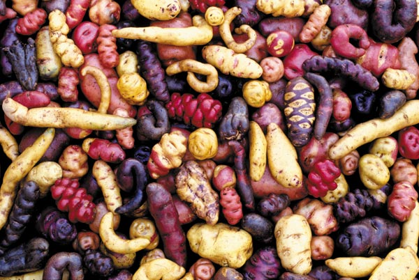

Aquí descripción de cliente
Somos una
Cooperativa Agraria
promoviendo la producción y comercialización de productos de la biodiversidad como la tara, la quinua, Centeno, maíz morado

promoviendo la producción y comercialización de productos de la biodiversidad como la tara, la quinua, Centeno, maíz morado
Cooperativa Agraria Productores de Tara.
Es una organización sin fines de lucro, cuyo objetivo principal es promover la producción y comercialización de productos de la biodiversidad como la tara y la quinua, fortaleciendo las capacidades de sus asociados y brindando servicios que permitan mejorar sus ingresos y sus condiciones de vida.
Al 2020 la Cooperativa Agraría Productores de Tara del Norte es la primera organización que produce, acopia, transforma y exporta TARA con solidez económica; que es reconocida a nivel Local, Regional, Nacional e Internacional mejorando el nivel de vida de sus socios comprometidos con la organización y el cuidad del Medio Ambiente

Somos una cooperativa de productores de Tara y otros productos de la biodiversidad, trabajando par nuestros socios, sus familias y el mercado para mejorar las condiciones económicas sociales y ambientales en base a nuestra experiencia en el negocio de la Tara y una gestión transparente eficiente de los recursos.
Tara en vaina a precio y peso justo
Venta de semilla de Tara
Venta de Controladores biológicos para las plagas de la Tara, Quinua y otros cultivos
Venta de abonos orgánicos (guano de isla) para nuestros asociados
En producción de plantones, establecimiento de plantaciones, manejo de bosques naturales y plantaciones de Tara.
En la producción orgánica del cultivo de quinua.
En la implementación de Sistema Interno de Control (SIC) para certificación orgánica en Tara y Quinua.
Elaboración de Declaraciones de Manejo (DEMAs) de Tara
Certificación orgánica para nuestros asociados en el cultivo de Tara.
Microcréditos de bajo interés para nuestros asociados (compra de abonos y producción orgánica).
Fondo mortuorio para nuestros asociados y su cónyuge
Nuestros productos y servicios en imágenes.

Nace como organización dentro de AC. TIERRA – (30-11-2003) – 16 Caseríos, con el nombre de “Asociación de Productores de Tara Cajamarca San Marcos” -APROTACSAM.
Ejecuta proyectos relacionados con el manejo de los bosques naturales y comercialización de vaina de tara.
Se genera el Primer Manual Técnico de Manejo de Bosques Naturales de Tara en la Región Cajamarca.
Inicia sus actividades de manera independiente, gracias a un contrato de proveeduría de vaina de tara con la empresa EXANDAL S.A.
Se comercializó 534 T.M. de tara
Inicia acopio de vaina de tara en otros mercados (La Libertad, Lambayeque).
Recibe apoyo importante de aliados estratégicos (GTZ, Autre Terre, IDESI Ayacucho)
Logra comercializar un producto de mejor calidad (libre de vainas verdes e impurezas)
Cambio de razón social: de APROTACSAM a “Asociación de Productores de Tara” – APT.
Amplía su intervención de compra en 5 departamentos (Cajamarca, La Libertad, Lambayeque, Amazonas y Piura)
Inicia trabajos de investigación en plagas de la tara, con el fin de reducir los daños económicos (Psilido o Pulgón)
Inicia trabajos de certificación orgánica con apoyo de GTZ- Proyecto Biocomercio Andino – SECO.
APT se consolida como el primer proveedor de materia prima (vaina de tara) en la región norte del País (cinco departamentos)
Logra la compra de un terreno para la construcción de un almacén (Proyecto con Agro emprende)
Apoya trabajo de investigación en Biología reproductiva de la Tara.
En convenio con el FINCyT, se logra instalar e implementar el primer laboratorio piloto para la producción de controladores biológicos.
Fortalecimiento Gerencial: Con GIZ se implementa una consultoría Gerencial y con el apoyo de del Programa Región Exportadora TECNOSERVE.
Inicia la implementación de un Sistema Interno de Control (SIC) para certificación orgánica de Tara, con el proyecto Sierra Norte
Se inicia la construcción de almacén para acopio de tara – Proyecto con Agro emprende),
Se da mayor impulso a los trabajos de investigación con el Gobierno Regional CORECITI)
La organización logra su punto más alto de acopio y comercialización de Tara: 5,755 T.M.
Se genera: Plan Estratégico, Manual de organización y funciones (MOF), Estrategia de comunicación, Implementación Propuesta piloto de Servicios sociales
Se cambia de razón social de APT a APT del Norte y se constituye en una Asociación de segundo nivel.
Se adquieren equipos e instrumentos para un laboratorio de control de calidad del producto a comercializar (Determinadores de humedad)
Se continúa implementando el SIC para certificación de la tara, con apoyo del proyecto Sierra Norte.
Inicia trabajos en la cadena de la quinua, como nuevo producto.
Certificación orgánica en Tara (14 de Agosto del 2014)
Convenios con entidades como “TRIAS” y Agriterra, Incorporación de jóvenes y mujeres en la vida institucional, Fortalecimiento organizacional, Incidencia, Capacitación en Gestión financiera, Capacitación en Cooperativismo, Estudio de inteligencia de mercados, Estados financieros con auditoría externa.
Se construye local de oficinas; Se inicia producción de quinua – Plan de Negocio con PROMPERU – Programas de Biocomercio Andino.
Adquisición de maquina cosechadora de quinua y se obtiene crédito para la compra de terreno en Paiján para instalación de plantación de tara.
Estudio para pasar de Asociación a Cooperativa
Manual de procedimientos financieros y Capacitación y adquisición de Software para mejorar la contabilidad de la organización. Formalización de predios. Análisis financiero del negocio
Inicio de trabajos en terreno adquirido en Paiján (Plantación de tara)
Otorgamiento de préstamos de bajo interés a los asociados
Se logra la conversión de Asociación a Cooperativa
Nuestros colaboradores revisan seguidamente nuestros correos coorporativos, le responderemos este mensaje lo más antes posible.
Gracias por ayudarnos a ser la empresa que todos necesitamos. Puedes seguirnos en nuestras redes sociales, canales de video, redes fotográficas. ¡Estaremos más conectados que nueca!
Dirección: Jr. Amorin Bueno S/N, San Marcos, Cajamarca
Telefonos: (076)558336 Cel.: 976317573 - 981794211
Correo: cooperativaaptdelnorte@gmail.com
Horario de atención: Lunes - Sábado / 8:00 AM - 7:00 PM